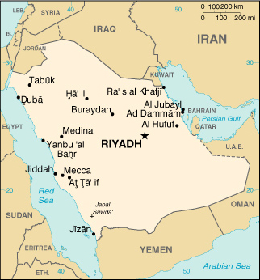

|
Saudi Arabia | |
| Introduction Geography People Government Economy Communications Transportation Military Transnational Issues | ||
|  | ||
| Saudi Arabia | Introduction | Top of Page |
| Background: | In 1902 Abdul al-Aziz Ibn SAUD captured Riyadh and set out on a 30-year campaign to unify the Arabian peninsula. In the 1930s, the discovery of oil transformed the country. Following Iraq's invasion of Kuwait in 1990, Saudi Arabia accepted the Kuwaiti royal family and 400,000 refugees while allowing Western and Arab troops to deploy on its soil for the liberation of Kuwait the following year. A burgeoning population, aquifer depletion, and an economy largely dependent on petroleum output and prices are all major governmental concerns. |
| Saudi Arabia | Geography | Top of Page |
| Location: | Middle East, bordering the Persian Gulf and the Red Sea, north of Yemen |
| Geographic coordinates: | 25 00 N, 45 00 E |
| Map references: | Middle East |
| Area: |
total:
1,960,582 sq km
land: 1,960,582 sq km water: 0 sq km |
| Area - comparative: | slightly more than one-fifth the size of the US |
| Land boundaries: |
total:
4,415 km
border countries: Iraq 814 km, Jordan 728 km, Kuwait 222 km, Oman 676 km, Qatar 60 km, UAE 457 km, Yemen 1,458 km |
| Coastline: | 2,640 km |
| Maritime claims: |
contiguous zone:
18 NM
continental shelf: not specified territorial sea: 12 NM |
| Climate: | harsh, dry desert with great extremes of temperature |
| Terrain: | mostly uninhabited, sandy desert |
| Elevation extremes: |
lowest point:
Persian Gulf 0 m
highest point: Jabal Sawda' 3,133 m |
| Natural resources: | petroleum, natural gas, iron ore, gold, copper |
| Land use: |
arable land:
2%
permanent crops: 0% permanent pastures: 56% forests and woodland: 1% other: 41% (1993 est.) |
| Irrigated land: | 4,350 sq km (1993 est.) |
| Natural hazards: | frequent sand and dust storms |
| Environment - current issues: | desertification; depletion of underground water resources; the lack of perennial rivers or permanent water bodies has prompted the development of extensive seawater desalination facilities; coastal pollution from oil spills |
| Environment - international agreements: |
party to:
Climate Change, Desertification, Endangered Species, Hazardous Wastes, Law of the Sea, Ozone Layer Protection
signed, but not ratified: none of the selected agreements |
| Geography - note: | extensive coastlines on Persian Gulf and Red Sea provide great leverage on shipping (especially crude oil) through Persian Gulf and Suez Canal |
| Saudi Arabia | People | Top of Page |
| Population: |
22,757,092
note: includes 5,360,526 non-nationals (July 2001 est.) |
| Age structure: |
0-14 years:
42.52% (male 4,932,465; female 4,743,908)
15-64 years: 54.8% (male 7,290,840; female 5,179,393) 65 years and over: 2.68% (male 334,981; female 275,505) (2001 est.) |
| Population growth rate: | 3.27% (2001 est.) |
| Birth rate: | 37.34 births/1,000 population (2001 est.) |
| Death rate: | 5.94 deaths/1,000 population (2001 est.) |
| Net migration rate: | 1.32 migrant(s)/1,000 population (2001 est.) |
| Sex ratio: |
at birth:
1.05 male(s)/female
under 15 years: 1.04 male(s)/female 15-64 years: 1.41 male(s)/female 65 years and over: 1.22 male(s)/female total population: 1.23 male(s)/female (2001 est.) |
| Infant mortality rate: | 51.25 deaths/1,000 live births (2001 est.) |
| Life expectancy at birth: |
total population:
68.09 years
male: 66.4 years female: 69.85 years (2001 est.) |
| Total fertility rate: | 6.25 children born/woman (2001 est.) |
| HIV/AIDS - adult prevalence rate: | 0.01% (1999 est.) |
| HIV/AIDS - people living with HIV/AIDS: | NA |
| HIV/AIDS - deaths: | NA |
| Nationality: |
noun:
Saudi(s)
adjective: Saudi or Saudi Arabian |
| Ethnic groups: | Arab 90%, Afro-Asian 10% |
| Religions: | Muslim 100% |
| Languages: | Arabic |
| Literacy: |
definition:
age 15 and over can read and write
total population: 62.8% male: 71.5% female: 50.2% (1995 est.) |
| Saudi Arabia | Government | Top of Page |
| Country name: |
conventional long form:
Kingdom of Saudi Arabia
conventional short form: Saudi Arabia local long form: Al Mamlakah al Arabiyah as Suudiyah local short form: Al Arabiyah as Suudiyah |
| Government type: | monarchy |
| Capital: | Riyadh |
| Administrative divisions: | 13 provinces (mintaqat, singular - mintaqah); Al Bahah, Al Hudud ash Shamaliyah, Al Jawf, Al Madinah, Al Qasim, Ar Riyad, Ash Sharqiyah (Eastern Province), 'Asir, Ha'il, Jizan, Makkah, Najran, Tabuk |
| Independence: | 23 September 1932 (Unification of the Kingdom) |
| National holiday: | Unification of the Kingdom, 23 September (1932) |
| Constitution: | governed according to Shari'a (Islamic law); the Basic Law that articulates the government's rights and responsibilities was introduced in 1993 |
| Legal system: | based on Islamic law, several secular codes have been introduced; commercial disputes handled by special committees; has not accepted compulsory ICJ jurisdiction |
| Suffrage: | none |
| Executive branch: |
chief of state:
King and Prime Minister FAHD bin Abd al-Aziz Al Saud (since 13 June 1982); Crown Prince and First Deputy Prime Minister ABDALLAH bin Abd al-Aziz Al Saud (half-brother to the monarch, heir to the throne since 13 June 1982, regent from 1 January to 22 February 1996); note - the monarch is both the chief of state and head of government
head of government: King and Prime Minister FAHD bin Abd al-Aziz Al Saud (since 13 June 1982); Crown Prince and First Deputy Prime Minister ABDALLAH bin Abd al-Aziz Al Saud (half-brother to the monarch, heir to the throne since 13 June 1982, regent from 1 January to 22 February 1996); note - the monarch is both the chief of state and head of government cabinet: Council of Ministers is appointed by the monarch and includes many royal family members elections: none; the monarch is hereditary |
| Legislative branch: | a consultative council (90 members and a chairman appointed by the monarch for four-year terms) |
| Judicial branch: | Supreme Council of Justice |
| Political parties and leaders: | none allowed |
| Political pressure groups and leaders: | none |
| International organization participation: | ABEDA, AfDB, AFESD, AL, AMF, BIS, CCC, ESCWA, FAO, G-19, G-77, GCC, IAEA, IBRD, ICAO, ICC, ICRM, IDA, IDB, IFAD, IFC, IFRCS, ILO, IMF, IMO, Inmarsat, Intelsat, Interpol, IOC, ISO, ITU, NAM, OAPEC, OAS (observer), OIC, OPCW, OPEC, UN, UNCTAD, UNESCO, UNIDO, UPU, WFTU, WHO, WIPO, WMO, WTrO (observer) |
| Diplomatic representation in the US: |
chief of mission:
Ambassador BANDAR bin Sultan bin Abd al-Aziz Al Saud
chancery: 601 New Hampshire Avenue NW, Washington, DC 20037 telephone: [1] (202) 342-3800 consulate(s) general: Houston, Los Angeles, and New York |
| Diplomatic representation from the US: |
chief of mission:
Ambassador Wyche FOWLER, Jr.
embassy: Collector Road M, Diplomatic Quarter, Riyadh mailing address: American Embassy Riyadh, Unit 61307, APO AE 09803-1307; International Mail: P. O. Box 94309, Riyadh 11693 telephone: [966] (1) 488-3800 FAX: [966] (1) 488-7360 consulate(s) general: Dhahran, Jiddah (Jeddah) |
| Flag description: | green with large white Arabic script (that may be translated as There is no God but God; Muhammad is the Messenger of God) above a white horizontal saber (the tip points to the hoist side); green is the traditional color of Islam |
| Saudi Arabia | Economy | Top of Page |
| Economy - overview: | This is an oil-based economy with strong government controls over major economic activities. Saudi Arabia has the largest reserves of petroleum in the world (26% of the proved reserves), ranks as the largest exporter of petroleum, and plays a leading role in OPEC. The petroleum sector accounts for roughly 75% of budget revenues, 40% of GDP, and 90% of export earnings. About 35% of GDP comes from the private sector. Roughly 5 million foreign workers play an important role in the Saudi economy, for example, in the oil and service sectors. Saudi Arabia was a key player in the successful efforts of OPEC and other oil producing countries to raise the price of oil in 1999-2000 to its highest level since the Gulf war by reducing production. Riyadh expects to have a moderate budget deficit in 2001, in part because of increased spending for education and other social programs. The government in 1999 announced plans to begin privatizing the electricity companies, which follows the ongoing privatization of the telecommunications company. The government is expected to continue calling for private sector growth to lessen the kingdom's dependence on oil and increase employment opportunities for the swelling Saudi population. Shortages of water and rapid population growth will constrain government efforts to increase self-sufficiency in agricultural products. |
| GDP: | purchasing power parity - $232 billion (2000 est.) |
| GDP - real growth rate: | 4% (2000 est.) |
| GDP - per capita: | purchasing power parity - $10,500 (2000 est.) |
| GDP - composition by sector: |
agriculture:
6%
industry: 47% services: 47% (1998 est.) |
| Population below poverty line: | NA% |
| Household income or consumption by percentage share: |
lowest 10%:
NA%
highest 10%: NA% |
| Inflation rate (consumer prices): | 0.5% (2000) |
| Labor force: |
7 million
note: 35% of the population in the 15-64 age group is non-national (July 1998 est.) |
| Labor force - by occupation: | agriculture 12%, industry 25%, services 63% (1999 est.) |
| Unemployment rate: | NA% |
| Budget: |
revenues:
$66 billion
expenditures: $66 billion, including capital expenditures of $NA (2000 est.) |
| Industries: | crude oil production, petroleum refining, basic petrochemicals, cement, construction, fertilizer, plastics |
| Industrial production growth rate: | 1% (1997 est.) |
| Electricity - production: | 120 billion kWh (1999) |
| Electricity - production by source: |
fossil fuel:
100%
hydro: 0% nuclear: 0% other: 0% (1999) |
| Electricity - consumption: | 111.6 billion kWh (1999) |
| Electricity - exports: | 0 kWh (1999) |
| Electricity - imports: | 0 kWh (1999) |
| Agriculture - products: | wheat, barley, tomatoes, melons, dates, citrus; mutton, chickens, eggs, milk |
| Exports: | $81.2 billion (f.o.b., 2000) |
| Exports - commodities: | petroleum and petroleum products 90% |
| Exports - partners: | Japan 18%, US 18%, France 4%, South Korea, Singapore, India (1999) |
| Imports: | $30.1 billion (f.o.b., 2000) |
| Imports - commodities: | machinery and equipment, foodstuffs, chemicals, motor vehicles, textiles |
| Imports - partners: | US 25%, Japan 10%, Germany 7%, Italy 5%, France, UK (1999) |
| Debt - external: | $26.3 billion (2000 est.) |
| Economic aid - donor: | pledged $100 million in 1993 to fund reconstruction of Lebanon; since 1993, Saudi Arabia has committed $208 million for assistance to the Palestinians |
| Currency: | Saudi riyal (SAR) |
| Currency code: | SAR |
| Exchange rates: | Saudi riyals per US dollar - 3.7450 (fixed rate since June 1986) |
| Fiscal year: | calendar year |
| Saudi Arabia | Communications | Top of Page |
| Telephones - main lines in use: | 3.1 million (1998) |
| Telephones - mobile cellular: |
1 million
note: in 1998, the government contracted for the installation of 575,000 additional Group Speciale Mobile (GSM) cellular telephone lines over 15 months to raise the total number of subscribers to more than one million; Riyadh planned to further expand the GSM system in 1999 by adding an additional one million lines (1998) |
| Telephone system: |
general assessment:
modern system
domestic: extensive microwave radio relay, coaxial cable, and fiber-optic cable systems international: microwave radio relay to Bahrain, Jordan, Kuwait, Qatar, UAE, Yemen, and Sudan; coaxial cable to Kuwait and Jordan; submarine cable to Djibouti, Egypt and Bahrain; satellite earth stations - 5 Intelsat (3 Atlantic Ocean and 2 Indian Ocean), 1 Arabsat, and 1 Inmarsat (Indian Ocean region) |
| Radio broadcast stations: | AM 43, FM 31, shortwave 2 (1998) |
| Radios: | 6.25 million (1997) |
| Television broadcast stations: | 117 (1997) |
| Televisions: | 5.1 million (1997) |
| Internet country code: | .sa |
| Internet Service Providers (ISPs): | 42 (2001) |
| Internet users: | 400,000 (2001) |
| Saudi Arabia | Transportation | Top of Page |
| Railways: |
total:
1,390 km
standard gauge: 1,390 km 1.435-m gauge (448 km double track) (1992) |
| Highways: |
total:
146,524 km
paved: 44,104 km unpaved: 102,420 km (1997 est.) |
| Waterways: | none |
| Pipelines: | crude oil 6,400 km; petroleum products 150 km; natural gas 2,200 km (includes natural gas liquids 1,600 km) |
| Ports and harbors: | Ad Dammam, Al Jubayl, Duba, Jiddah, Jizan, Rabigh, Ra's al Khafji, Mishab, Ras Tanura, Yanbu' al Bahr, Madinat Yanbu' al Sinaiyah |
| Merchant marine: |
total:
71 ships (1,000 GRT or over) totaling 1,154,619 GRT/1,533,732 DWT
ships by type: cargo 11, chemical tanker 8, container 5, liquefied gas 1, livestock carrier 3, passenger 1, petroleum tanker 18, refrigerated cargo 3, roll on/roll off 13, short-sea passenger 8 (2000 est.) |
| Airports: | 206 (2000 est.) |
| Airports - with paved runways: |
total:
70
over 3,047 m: 31 2,438 to 3,047 m: 11 1,524 to 2,437 m: 23 914 to 1,523 m: 3 under 914 m: 2 (2000 est.) |
| Airports - with unpaved runways: |
total:
136
2,438 to 3,047 m: 5 1,524 to 2,437 m: 77 914 to 1,523 m: 39 under 914 m: 15 (2000 est.) |
| Heliports: | 5 (2000 est.) |
| Saudi Arabia | Military | Top of Page |
| Military branches: | Land Force (Army), Navy, Air Force, Air Defense Force, National Guard, Ministry of Interior Forces (paramilitary) |
| Military manpower - military age: | 17 years of age |
| Military manpower - availability: | males age 15-49: 5,894,691 (2001 est.) |
| Military manpower - fit for military service: | males age 15-49: 3,291,185 (2001 est.) |
| Military manpower - reaching military age annually: | males: 233,402 (2001 est.) |
| Military expenditures - dollar figure: | $18.3 billion (FY00) |
| Military expenditures - percent of GDP: | 13% (FY00) |
| Saudi Arabia | Transnational Issues | Top of Page |
| Disputes - international: | a final border resolution was agreed to with Qatar in March of 2001; location and status of boundary with UAE is not final, de facto boundary reflects a 1974 agreement; a June 2000 treaty delimited the boundary with Yemen, but final demarcation requires adjustments based on tribal considerations |
| Illicit drugs: | death penalty for traffickers; increasing consumption of heroin and cocaine |
{kind=link}
{kind=link}